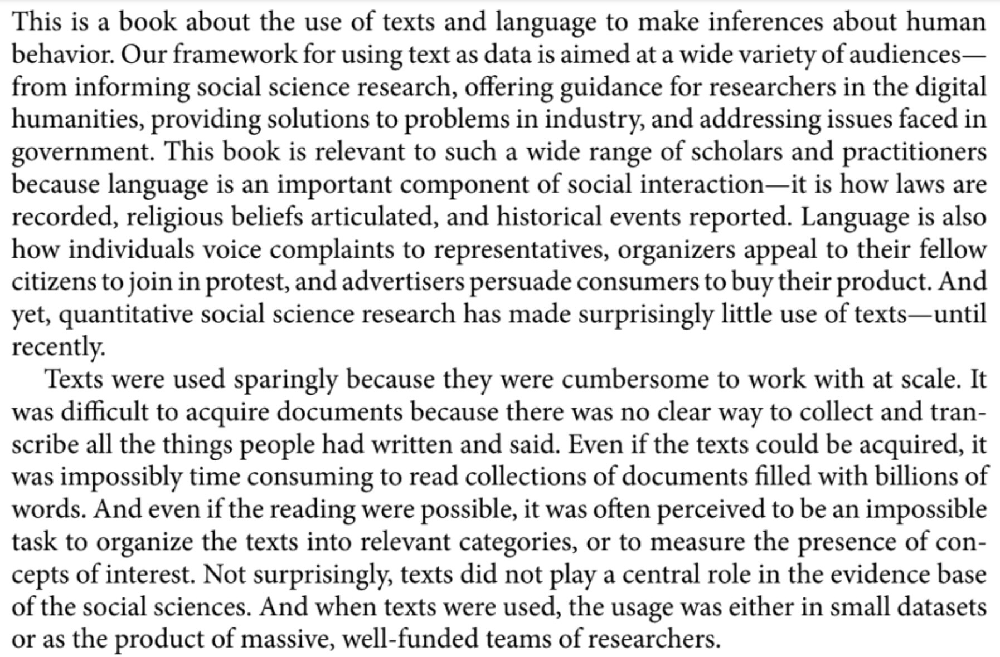
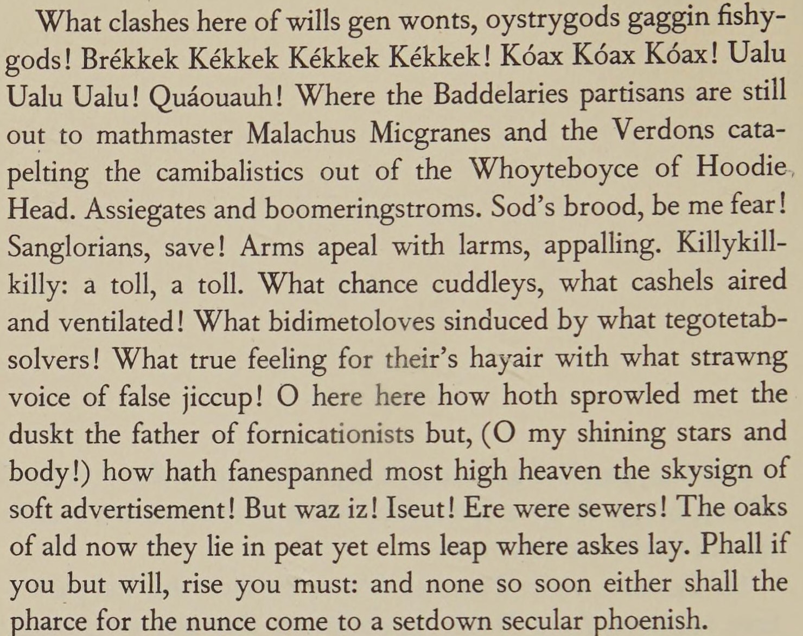

source("../_globals.r")Week 6: Exploratory Data Analysis (EDA)
DSAN 5100: Data Science and Analytics
Section 02
Class Sessions
Schedule
from IPython.display import Markdown
def disp(df):
return Markdown(df.to_markdown())Today’s Planned Schedule (Section 02):
| Start | End | Topic | Recording | |
|---|---|---|---|---|
| Lecture | 12:30pm | 1:00pm | Week 05 Deeper Dive → | |
| 1:00pm | 1:15pm | (Shorter!) Quiz 3.1 | ||
| 1:15pm | 1:25pm | Introduction to EDA → | ||
| 1:25pm | 1:40pm | Distance Metrics → | ||
| 1:40pm | 2:00pm | Missing Data / Outlier Detection → | ||
| Break! | 2:00pm | 2:10pm | ||
| Lab | 2:10pm | 2:40pm | Lab 5 → | |
| 2:40pm | 3:00pm | Student Presentation |
Week 05 Recap
- NLP
- Tidyverse
- Merging, Reshaping Data
NLP Recap



| doc_id | text |
texts |
Kékkek |
voice |
|
|---|---|---|---|---|---|
| 0 | 0 | 6 | 0 | 1 | |
| 1 | 0 | 0 | 3 | 1 | |
| 2 | 6 | 0 | 0 | 0 |
| doc_id | text |
kekkek |
voice |
||
|---|---|---|---|---|---|
| 0 | 6 | 0 | 1 | ||
| 1 | 0 | 3 | 1 | ||
| 2 | 6 | 0 | 0 |
Your NLP Toolbox
- Processes like lowercasing and stemming allowed the computer to recognize that
textandtextsshould be counted together in this context, since they refer to the same semantic concept. - As we learn NLP, we’ll develop a “toolbox” of ideas, algorithms, and tasks allowing us to quantify, clean, and analyzing text data, where each tool will help us at some level/stage of this analysis:
- Gathering texts
- Preprocessing
- Learning (e.g., estimating parameters for a model) about the texts
- Applying what we learned to downstream tasks we’d like to solve
The Items In Our Toolbox
• Corpus: The collection of documents you’re hoping to analyze
• Books, articles, posts, emails, tweets, etc.
• Vocabulary: The collection of unique tokens across all documents in your corpus
• Segmentation: Breaking a document into parts (paragraphs and/or sentences)
Sentence/Word Level NLP
• Tokenization: Break sentence into tokens
• Stopword Removal: Removing non-semantic (syntactic) tokens like “the”, “and”
• Stemming: Naïvely (but quickly) “chopping off” ends of tokens (e.g., plural → singular)
• Lemmatization: Algorithmically map tokens to linguistic roots (slower than stemming)
Transform textual representation into numeric representation, like the DTM
• Text classification
• Named entity recognition
• Sentiment analysis
Tidyverse
- Think of data science tasks as involving pipelines:
- Tidyverse lets you pipe output from one transformation as the input to another:
raw_data |> select() |> mutate() |> visualize()
raw_data |> filter() |> summarize() |> check_result()Selecting Columns
select() lets you keep only the columns you care about in your current analysis:
library(tidyverse)── Attaching core tidyverse packages ──────────────────────── tidyverse 2.0.0 ──
✔ dplyr 1.1.2 ✔ readr 2.1.4
✔ forcats 1.0.0 ✔ stringr 1.5.0
✔ lubridate 1.9.2 ✔ tibble 3.2.1
✔ purrr 1.0.2 ✔ tidyr 1.3.0
── Conflicts ────────────────────────────────────────── tidyverse_conflicts() ──
✖ dplyr::filter() masks stats::filter()
✖ dplyr::lag() masks stats::lag()
ℹ Use the conflicted package (<http://conflicted.r-lib.org/>) to force all conflicts to become errorstable1# A tibble: 6 × 4
country year cases population
<chr> <dbl> <dbl> <dbl>
1 Afghanistan 1999 745 19987071
2 Afghanistan 2000 2666 20595360
3 Brazil 1999 37737 172006362
4 Brazil 2000 80488 174504898
5 China 1999 212258 1272915272
6 China 2000 213766 1280428583Code
table1 |> select(country, year, population)# A tibble: 6 × 3
country year population
<chr> <dbl> <dbl>
1 Afghanistan 1999 19987071
2 Afghanistan 2000 20595360
3 Brazil 1999 172006362
4 Brazil 2000 174504898
5 China 1999 1272915272
6 China 2000 1280428583Filtering Rows
filter() lets you keep only the rows you care about in your current analysis:
Code
table1 |> filter(year == 2000)# A tibble: 3 × 4
country year cases population
<chr> <dbl> <dbl> <dbl>
1 Afghanistan 2000 2666 20595360
2 Brazil 2000 80488 174504898
3 China 2000 213766 1280428583Code
table1 |> filter(country == "Afghanistan")# A tibble: 2 × 4
country year cases population
<chr> <dbl> <dbl> <dbl>
1 Afghanistan 1999 745 19987071
2 Afghanistan 2000 2666 20595360Merging Data
- The task: Analyze relationship between population and GDP (in 2000)
- The data: One dataset on population in 2000, another on GDP in 2000
- Let’s get the data ready for merging using R
Code
df <- table1 |>
select(country, year, population) |>
filter(year == 2000)
df |> write_csv("assets/pop_2000.csv")
df# A tibble: 3 × 3
country year population
<chr> <dbl> <dbl>
1 Afghanistan 2000 20595360
2 Brazil 2000 174504898
3 China 2000 1280428583Code
gdp_df <- read_csv("https://gist.githubusercontent.com/jpowerj/c83e87f61c166dea8ba7e4453f08a404/raw/29b03e6320bc3ffc9f528c2ac497a21f2d801c00/gdp_2000_2010.csv")Rows: 403 Columns: 4
── Column specification ────────────────────────────────────────────────────────
Delimiter: ","
chr (2): Country Name, Country Code
dbl (2): Year, Value
ℹ Use `spec()` to retrieve the full column specification for this data.
ℹ Specify the column types or set `show_col_types = FALSE` to quiet this message.Code
gdp_df |> head(5)# A tibble: 5 × 4
`Country Name` `Country Code` Year Value
<chr> <chr> <dbl> <dbl>
1 Afghanistan AFG 2010 15936800636.
2 Albania ALB 2000 3632043908.
3 Albania ALB 2010 11926953259.
4 Algeria DZA 2000 54790245601.
5 Algeria DZA 2010 161207268655.Selecting/Filtering in Action
Code
gdp_2000_df <- gdp_df |>
select(`Country Name`,Year,Value) |>
filter(Year == "2000") |>
rename(country=`Country Name`, year=`Year`, gdp=`Value`)
gdp_2000_df |> write_csv("assets/gdp_2000.csv")
gdp_2000_df |> head()# A tibble: 6 × 3
country year gdp
<chr> <dbl> <dbl>
1 Albania 2000 3632043908.
2 Algeria 2000 54790245601.
3 Andorra 2000 1434429703.
4 Angola 2000 9129594819.
5 Antigua and Barbuda 2000 830158769.
6 Argentina 2000 284203750000 Recommended Language: Python
Pandas provides an easy-to-use df.merge(other_df)!
Code
merged_df = pop_df.merge(gdp_df,
on='country', how='left', indicator=True
)
Markdown(merged_df.to_markdown())| country | year_x | population | year_y | gdp | _merge | |
|---|---|---|---|---|---|---|
| 0 | Afghanistan | 2000 | 20595360 | nan | nan | left_only |
| 1 | Brazil | 2000 | 174504898 | 2000 | 6.55421e+11 | both |
| 2 | China | 2000 | 1280428583 | 2000 | 1.21135e+12 | both |
Code
merged_df = pop_df.merge(gdp_df,
on='country', how='inner', indicator=True
)
Markdown(merged_df.to_markdown())| country | year_x | population | year_y | gdp | _merge | |
|---|---|---|---|---|---|---|
| 0 | Brazil | 2000 | 174504898 | 2000 | 6.55421e+11 | both |
| 1 | China | 2000 | 1280428583 | 2000 | 1.21135e+12 | both |
Reshaping Data
Sometimes you can’t merge because one of the datasets looks like the table on the left, but we want it to look like the table on the right
In data-cleaning jargon, this dataset is long (more than one row per observation)
table2 |> write_csv("assets/long_data.csv")
table2 |> head()# A tibble: 6 × 4
country year type count
<chr> <dbl> <chr> <dbl>
1 Afghanistan 1999 cases 745
2 Afghanistan 1999 population 19987071
3 Afghanistan 2000 cases 2666
4 Afghanistan 2000 population 20595360
5 Brazil 1999 cases 37737
6 Brazil 1999 population 172006362In data-cleaning jargon, this dataset is wide (one row per obs; usually tidy)
table1 |> write_csv("assets/wide_data.csv")
table1 |> head()# A tibble: 6 × 4
country year cases population
<chr> <dbl> <dbl> <dbl>
1 Afghanistan 1999 745 19987071
2 Afghanistan 2000 2666 20595360
3 Brazil 1999 37737 172006362
4 Brazil 2000 80488 174504898
5 China 1999 212258 1272915272
6 China 2000 213766 1280428583Reshaping Long-to-Wide in Python: pd.pivot()
Create unique ID for wide version:
Code
long_df['id'] = long_df['country'] + '_' + long_df['year'].apply(str)
# Reorder the columns, so it shows the id first
long_df = long_df[['id','country','year','type','count']]
disp(long_df.head(6))| id | country | year | type | count | |
|---|---|---|---|---|---|
| 0 | Afghanistan_1999 | Afghanistan | 1999 | cases | 745 |
| 1 | Afghanistan_1999 | Afghanistan | 1999 | population | 19987071 |
| 2 | Afghanistan_2000 | Afghanistan | 2000 | cases | 2666 |
| 3 | Afghanistan_2000 | Afghanistan | 2000 | population | 20595360 |
| 4 | Brazil_1999 | Brazil | 1999 | cases | 37737 |
| 5 | Brazil_1999 | Brazil | 1999 | population | 172006362 |
Code
reshaped_df = pd.pivot(long_df,
index='id',
columns='type',
values='count'
)
disp(reshaped_df)| id | cases | population |
|---|---|---|
| Afghanistan_1999 | 745 | 1.99871e+07 |
| Afghanistan_2000 | 2666 | 2.05954e+07 |
| Brazil_1999 | 37737 | 1.72006e+08 |
| Brazil_2000 | 80488 | 1.74505e+08 |
| China_1999 | 212258 | 1.27292e+09 |
| China_2000 | 213766 | 1.28043e+09 |
The Other Direction (Wide-to-Long): pd.melt()
Code
wide_df = pd.read_csv("assets/wide_data.csv")
disp(wide_df)| country | year | cases | population | |
|---|---|---|---|---|
| 0 | Afghanistan | 1999 | 745 | 19987071 |
| 1 | Afghanistan | 2000 | 2666 | 20595360 |
| 2 | Brazil | 1999 | 37737 | 172006362 |
| 3 | Brazil | 2000 | 80488 | 174504898 |
| 4 | China | 1999 | 212258 | 1272915272 |
| 5 | China | 2000 | 213766 | 1280428583 |
Code
long_df = pd.melt(wide_df,
id_vars=['country','year'],
value_vars=['cases','population']
)
disp(long_df.head(6))| country | year | variable | value | |
|---|---|---|---|---|
| 0 | Afghanistan | 1999 | cases | 745 |
| 1 | Afghanistan | 2000 | cases | 2666 |
| 2 | Brazil | 1999 | cases | 37737 |
| 3 | Brazil | 2000 | cases | 80488 |
| 4 | China | 1999 | cases | 212258 |
| 5 | China | 2000 | cases | 213766 |
Wide-to-Long in R: gather()
Code
table1# A tibble: 6 × 4
country year cases population
<chr> <dbl> <dbl> <dbl>
1 Afghanistan 1999 745 19987071
2 Afghanistan 2000 2666 20595360
3 Brazil 1999 37737 172006362
4 Brazil 2000 80488 174504898
5 China 1999 212258 1272915272
6 China 2000 213766 1280428583Code
long_df <- gather(table1,
key = "variable",
value = cases,
-c(country, year)
)
long_df |> head()# A tibble: 6 × 4
country year variable cases
<chr> <dbl> <chr> <dbl>
1 Afghanistan 1999 cases 745
2 Afghanistan 2000 cases 2666
3 Brazil 1999 cases 37737
4 Brazil 2000 cases 80488
5 China 1999 cases 212258
6 China 2000 cases 213766Quiz Time!
Introduction to EDA
Exploratory Data Analysis (EDA)
- In contrast to confirmatory data analysis
Normalization
Code
num_students <- 30
student_ids <- seq(from = 1, to = num_students)
# Test 1
t1_min_pts <- 0
t1_max_pts <- 268.3
t1_score_vals <- round(runif(num_students, t1_min_pts, t1_max_pts), 2)
t1_mean <- mean(t1_score_vals)
t1_sd <- sd(t1_score_vals)
get_t1_pctile <- function(s) round(100 * ecdf(t1_score_vals)(s), 1)
# Test 2
t2_min_pts <- -1
t2_max_pts <- 1.2
t2_score_vals <- round(runif(num_students, t2_min_pts, t2_max_pts), 2)
t2_mean <- mean(t2_score_vals)
t2_sd <- sd(t2_score_vals)
get_t2_pctile <- function(s) round(100 * ecdf(t2_score_vals)(s), 2)
score_df <- tibble(
id=student_ids,
t1_score=t1_score_vals,
t2_score=t2_score_vals
)
score_df <- score_df |> arrange(desc(t1_score))“I got a 254.47 on the first test!” 🤩
“But only a 0.79 on the second” 😭
# A tibble: 6 × 3
id t1_score t2_score
<int> <dbl> <dbl>
1 3 264. 0.66
2 8 254. 0.79
3 25 247. 0.71
4 29 242. -0.75
5 6 241. 0.39
6 10 226. 0.73score_df <- score_df |>
mutate(
t1_z_score = round((t1_score - t1_mean) / t1_sd, 2),
t2_z_score = round((t2_score - t2_mean) / t2_sd, 2),
t1_pctile = get_t1_pctile(t1_score),
t2_pctile = get_t2_pctile(t2_score)
) |>
relocate(t1_pctile, .after = t1_score) |>
relocate(t2_pctile, .after = t2_score)“I scored higher than 96.7% of students on the first test! 🤩
“And higher than 90% on the second!” 😎
# A tibble: 6 × 7
id t1_score t1_pctile t2_score t2_pctile t1_z_score t2_z_score
<int> <dbl> <dbl> <dbl> <dbl> <dbl> <dbl>
1 3 264. 100 0.66 70 1.55 0.74
2 8 254. 96.7 0.79 90 1.42 0.97
3 25 247. 93.3 0.71 73.3 1.32 0.83
4 29 242. 90 -0.75 6.67 1.25 -1.76
5 6 241. 86.7 0.39 53.3 1.25 0.27
6 10 226. 83.3 0.73 83.3 1.05 0.87Scaling
The percentile places everyone at evenly-spaced intervals from 0 to 100:
# https://community.rstudio.com/t/number-line-in-ggplot/162894/4
# Add a binary indicator to track "me" (student #8)
score_df <- score_df |>
mutate(is_me = as.numeric(id == 8))
library(ggplot2)
t1_line_data <- tibble(
x = score_df$t1_pctile,
y = 0,
me = score_df$is_me
)
ggplot(t1_line_data, aes(x,y,col=factor(me))) +
geom_point(aes(size=g_pointsize)) +
scale_x_continuous(breaks=seq(from=0, to=100, by=10)) +
scale_color_discrete(c(0,1)) +
dsan_theme("half") +
theme(
legend.position="none",
#rect = element_blank(),
#panel.grid = element_blank(),
axis.title.y = element_blank(),
axis.text.y = element_blank(),
axis.line.y = element_blank(),
axis.ticks.y=element_blank(),
panel.spacing = unit(0, "mm"),
plot.margin = margin(-35, 0, 0, 0, "pt"),
) +
labs(
x = "Test 1 Percentile"
) +
coord_fixed(ratio = 100)
But what if we want to see their absolute performance, on a 0 to 100 scale?
library(scales)
Attaching package: 'scales'The following object is masked from 'package:purrr':
discardThe following object is masked from 'package:readr':
col_factorscore_df <- score_df |>
mutate(
t1_rescaled = rescale(
t1_score,
from = c(t1_min_pts, t1_max_pts),
to = c(0, 100)
),
t2_rescaled = rescale(
t2_score,
from = c(t2_min_pts, t2_max_pts),
to = c(0, 100)
)
)
t1_rescaled_line_data <- tibble(
x = score_df$t1_rescaled,
y = 0,
me = score_df$is_me
)
ggplot(t1_rescaled_line_data, aes(x,y,col=factor(me))) +
geom_point(aes(size=g_pointsize)) +
scale_x_continuous(breaks=seq(from=0, to=100, by=10)) +
dsan_theme("half") +
theme(
legend.position="none",
#rect = element_blank(),
#panel.grid = element_blank(),
axis.title.y = element_blank(),
axis.text.y = element_blank(),
axis.line.y = element_blank(),
axis.ticks.y=element_blank(),
panel.spacing = unit(0, "mm"),
plot.margin = margin(-40, 0, 0, 0, "pt"),
) +
labs(
x = "Test 1 Score (Rescaled to 0-100)"
) +
coord_fixed(ratio = 100)
Shifting / Recentering
- Percentiles tell us how the students did in terms of relative rankings
- Rescaling lets us reinterpret the boundary points
- What about with respect to some absolute baseline? For example, how well they did relative to the mean \(\mu\)?
\[ x'_i = x_i - \mu \]
- But we’re still “stuck” in units of the test: is \(x'_i = 0.3\) (0.3 points above the mean) “good”? What about \(x'_j = -2568\) (2568 points below the mean)? How “bad” is this case?
Shifting and Scaling: The \(z\)-Score
- Enter the \(z\)-score!
\[ z_i = \frac{x_i - \mu}{\sigma} \]
- Unit of original \(x_i\) values: ?
- Unit of \(z\)-score: standard deviations from the mean!
t1_z_score_line_data <- tibble(
x = score_df$t1_z_score,
y = 0,
me = score_df$is_me
)
ggplot(t1_z_score_line_data, aes(x,y,col=factor(me))) +
geom_point(aes(size=g_pointsize)) +
scale_x_continuous(breaks=c(-2,-1,0,1,2)) +
dsan_theme("half") +
theme(
legend.position="none",
#rect = element_blank(),
#panel.grid = element_blank(),
axis.title.y = element_blank(),
axis.text.y = element_blank(),
axis.line.y = element_blank(),
axis.ticks.y=element_blank(),
plot.margin = margin(-20,0,0,0,"pt")
) +
expand_limits(x=c(-2,2)) +
labs(
x = "Test 1 Z-Score"
) +
coord_fixed(ratio = 3)